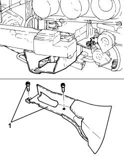

2130A61 AIR DUCT ON AUTOMATIC TRANSMISSION - R.R.
- Path
- Procedures > 21 GEARBOX UNIT > 2130 AUTOMATIC TRANSMISSION WITH DIFFERENTIAL > 2130A AUTOMATIC TRANSMISSION ASSEMBLY > 2130A61 AIR DUCT ON AUTOMATIC TRANSMISSION - R.R.
- Kind
- repair procedure (removal / refitting; the operation number is the code)
- Applies to
- engines: 3.2 JTS; all production periods
- Interactive page
- https://sloeber94.github.io/elrnDB-aBrrSpdr/en/#/946004271
Applies to: engines: 3.2 JTS; all production periods
 Removing
Removing
 Refitting
RefittingOp. 7055B54 UNDER ENGINE PROTECTION/GUARD - R.R.
1. Undo the bolts fixing the air duct to the front suspension frame and remove it.

Applies to: engines: 3.2 JTS; all production periods
Refitting
Removing- Fit the air duct in its housing and secure it to the front suspension frame using the bolts.